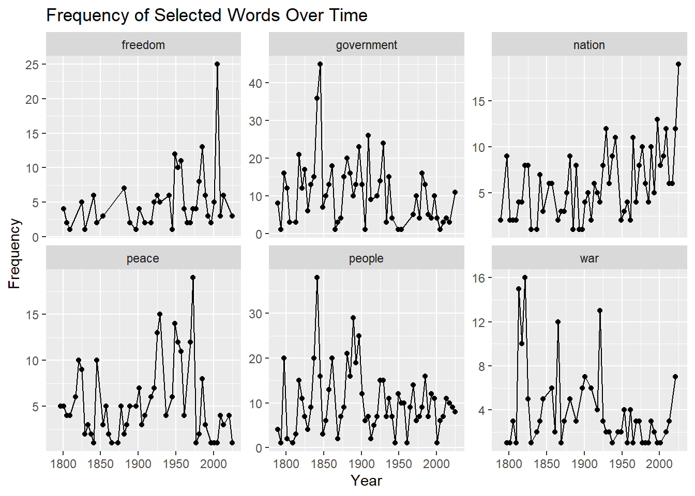
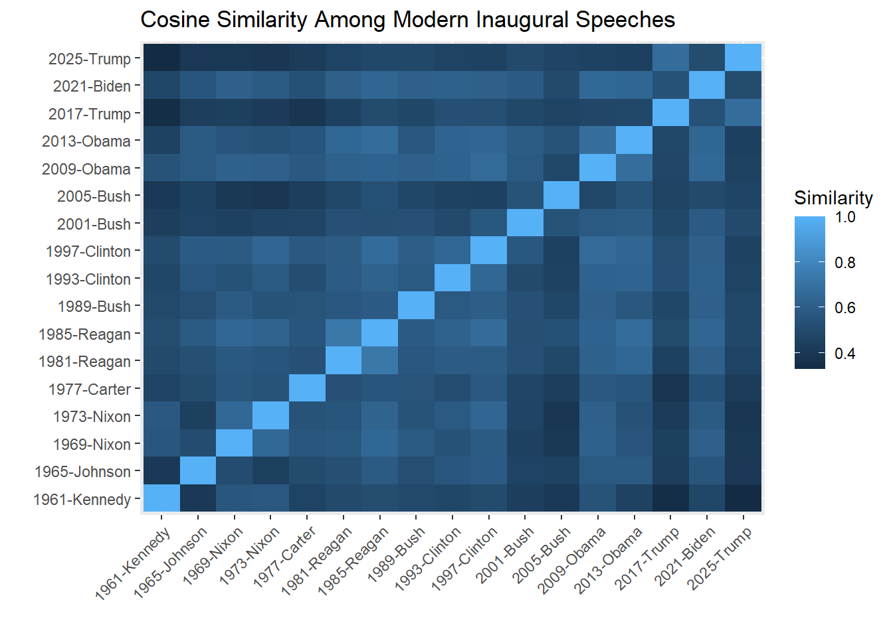
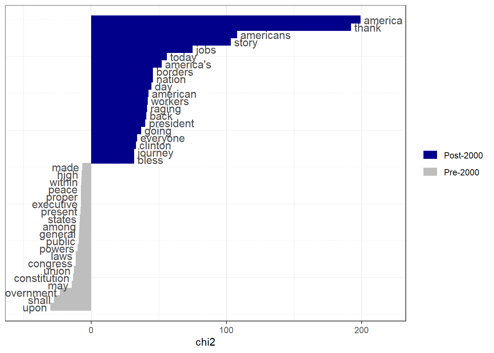
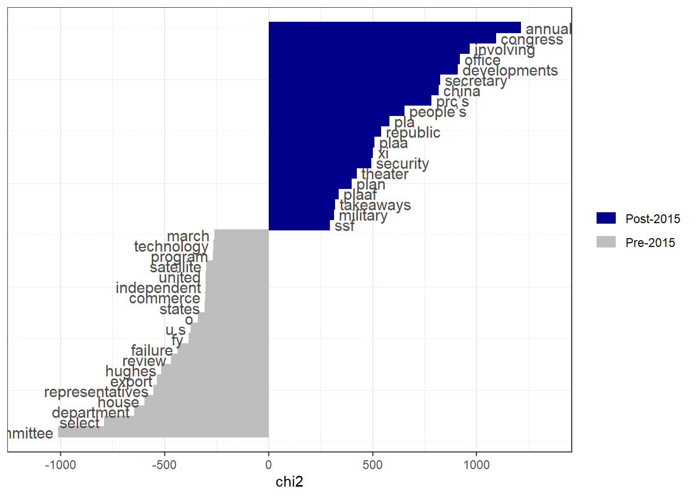
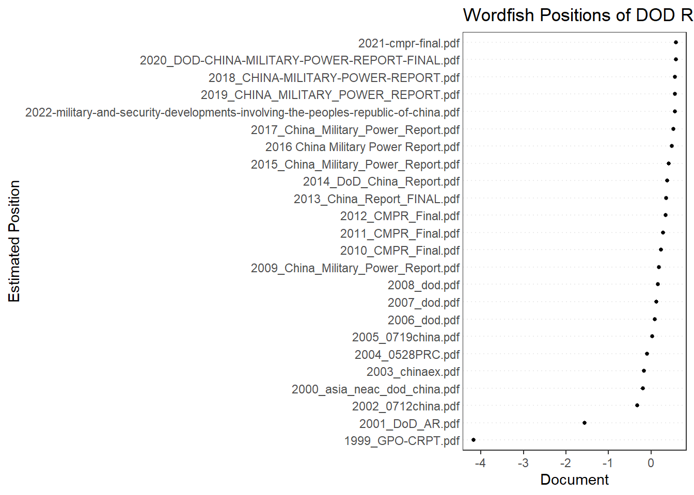
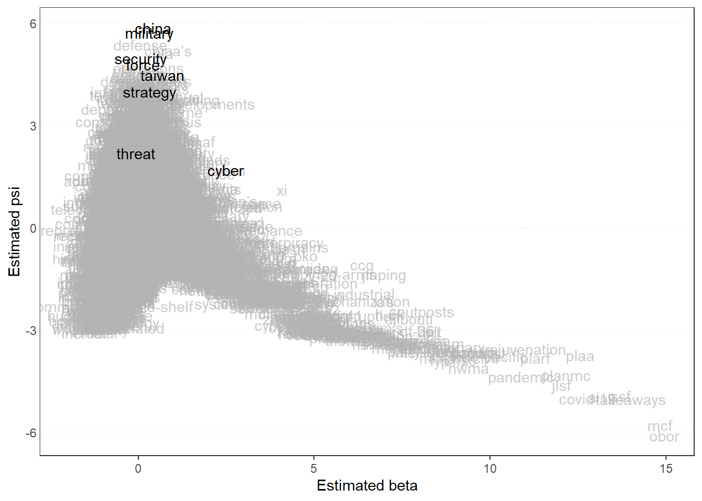
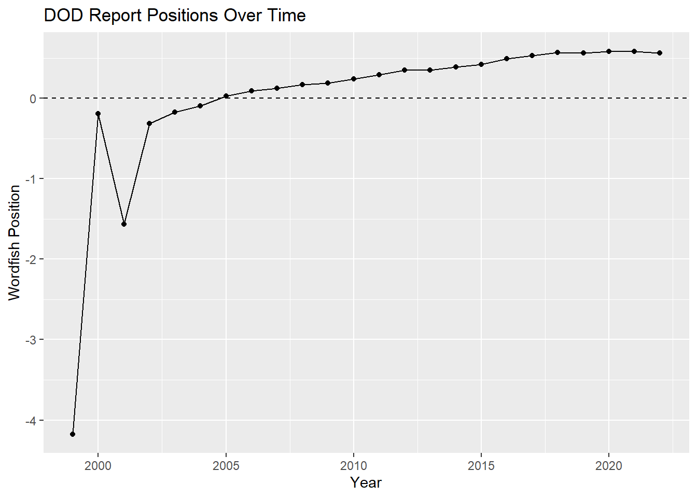
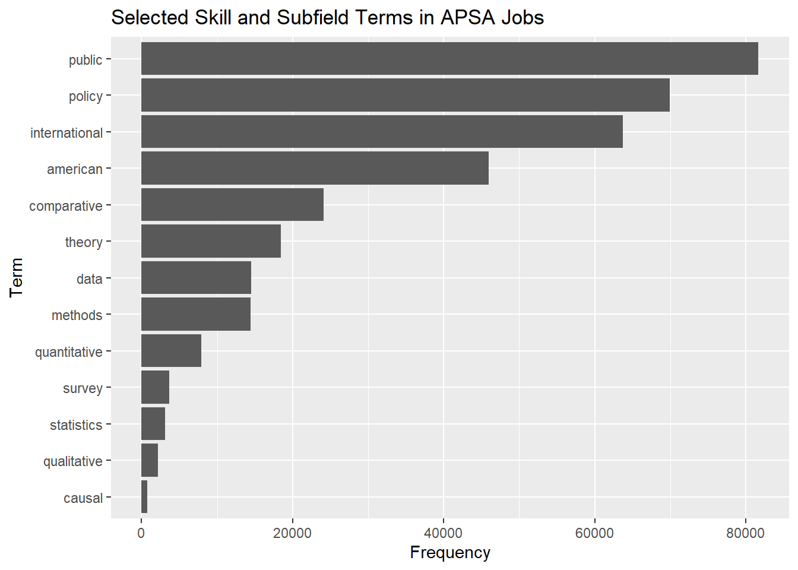

library(quanteda)
library(quanteda.textstats)
library(quanteda.textplots)
library(quanteda.textmodels)
library(readtext)
library(ggplot2)
library(dplyr)
library(tidyr)Assignment 4
1. Review of quanteda tutorial
For this assignment, I reviewed the quanteda tutorial: https://tutorials.quanteda.io/. The tutorial explains how text data can be prepared and analyzed in R. I learned that text data first needs to be cleaned and changed into a format that R can analyze.
In this assignment, I use quanteda to analyze U.S. presidential inaugural speeches, Department of Defense reports, and APSA eJobs postings.
2. U.S. Presidential Inaugural Speeches
In this section, I analyze U.S. presidential inaugural speeches to see similarities and differences over time and among presidents.
corp_inaug <- data_corpus_inaugural
summary(corp_inaug, 10)Corpus consisting of 60 documents, showing 10 documents:
Text Types Tokens Sentences Year President FirstName
1789-Washington 625 1537 24 1789 Washington George
1793-Washington 96 147 5 1793 Washington George
1797-Adams 826 2577 37 1797 Adams John
1801-Jefferson 717 1923 43 1801 Jefferson Thomas
1805-Jefferson 804 2380 45 1805 Jefferson Thomas
1809-Madison 535 1261 21 1809 Madison James
1813-Madison 541 1302 33 1813 Madison James
1817-Monroe 1040 3677 121 1817 Monroe James
1821-Monroe 1259 4886 131 1821 Monroe James
1825-Adams 1003 3147 75 1825 Adams John Quincy
Party
none
none
Federalist
Democratic-Republican
Democratic-Republican
Democratic-Republican
Democratic-Republican
Democratic-Republican
Democratic-Republican
Democratic-Republicantoks_inaug <- tokens(corp_inaug,
remove_punct = TRUE,
remove_numbers = TRUE,
remove_symbols = TRUE)
toks_inaug <- tokens_remove(toks_inaug, stopwords("en"))
dfm_inaug <- dfm(toks_inaug)
dfm_inaug <- dfm_trim(dfm_inaug, min_termfreq = 5)
dfm_inaugDocument-feature matrix of: 60 documents, 2,654 features (81.11% sparse) and 4 docvars.
features
docs fellow-citizens senate house representatives among
1789-Washington 1 1 2 2 1
1793-Washington 0 0 0 0 0
1797-Adams 3 1 0 2 4
1801-Jefferson 2 0 0 0 1
1805-Jefferson 0 0 0 0 7
1809-Madison 1 0 0 0 0
features
docs vicissitudes incident life event filled
1789-Washington 1 1 1 2 1
1793-Washington 0 0 0 0 0
1797-Adams 0 0 2 0 0
1801-Jefferson 0 0 1 0 0
1805-Jefferson 0 0 2 0 0
1809-Madison 0 0 1 0 1
[ reached max_ndoc ... 54 more documents, reached max_nfeat ... 2,644 more features ]Most frequent words
topfeatures(dfm_inaug, 20) people government us can must upon great
592 575 507 489 377 371 354
may states world nation country shall every
343 343 329 324 323 316 309
one peace new power now public
274 259 256 246 238 227 The most frequent words show common themes in presidential speeches. These speeches often focus on the country, people, government, freedom, and national unity.
Word cloud
set.seed(123)
textplot_wordcloud(dfm_inaug,
max_words = 100)Word frequency over time
key_words <- c("nation", "freedom", "peace", "war", "people", "government")
freq_time <- textstat_frequency(dfm_inaug,
groups = docvars(dfm_inaug, "Year"))
freq_time <- freq_time %>%
filter(feature %in% key_words)
ggplot(freq_time, aes(x = as.numeric(group), y = frequency)) +
geom_line() +
geom_point() +
facet_wrap(~ feature, scales = "free_y") +
labs(title = "Frequency of Selected Words Over Time",
x = "Year",
y = "Frequency")
This graph shows how selected words change over time. Some words may become more common during specific historical periods, such as war, economic crisis, or national change.
Similarity among modern presidents
dfm_modern <- dfm_subset(dfm_inaug, Year >= 1960)
sim_mat <- textstat_simil(dfm_modern,
method = "cosine",
margin = "documents")
sim_df <- as.data.frame(as.matrix(sim_mat))
sim_long <- sim_df %>%
tibble::rownames_to_column("doc1") %>%
pivot_longer(-doc1,
names_to = "doc2",
values_to = "similarity")
ggplot(sim_long, aes(x = doc1, y = doc2, fill = similarity)) +
geom_tile() +
theme(axis.text.x = element_text(angle = 45, hjust = 1)) +
labs(title = "Cosine Similarity Among Modern Inaugural Speeches",
x = "",
y = "",
fill = "Similarity")
Cosine similarity compares speeches based on word use. Speeches with similar language have higher similarity scores.
Keyness: pre-2000 and post-2000 speeches
dfm_era <- dfm_group(dfm_inaug,
groups = ifelse(docvars(dfm_inaug, "Year") >= 2000,
"Post-2000",
"Pre-2000"))
keyness_inaug <- textstat_keyness(dfm_era, target = "Post-2000")
textplot_keyness(keyness_inaug, n = 20)
Keyness shows which words are more common in one group of speeches compared with another group.
Interpretation
The inaugural speeches show both similarities and differences. The similarities are connected to repeated national themes such as people, government, freedom, and country. These themes are expected because inaugural speeches usually present a president’s vision for the nation.
The differences show that presidential language changes over time. Earlier speeches may use more formal language and focus more on the Constitution, union, and national foundation. More recent speeches may include language related to security, economy, global issues, and modern political challenges.
3. Department of Defense Reports
In this section, I analyze U.S. Department of Defense reports. These reports help show how official defense language changes over time.
Important: change the folder path below to the folder where your DOD reports are saved.
dod_files <- readtext("USDOD/*.pdf")
dod_files$year <- as.integer(
regmatches(dod_files$doc_id,
regexpr("\\d{4}", dod_files$doc_id))
)
corp_dod <- corpus(dod_files)
docvars(corp_dod, "year") <- dod_files$year
summary(corp_dod, 5)Corpus consisting of 24 documents, showing 5 documents:
Text Types Tokens Sentences year
1999_GPO-CRPT.pdf 16068 301499 14034 1999
2000_asia_neac_dod_china.pdf 2990 15078 601 2000
2001_DoD_AR.pdf 14864 186149 7952 2001
2002_0712china.pdf 4178 25908 1229 2002
2003_chinaex.pdf 4068 25848 1188 2003toks_dod <- tokens(corp_dod,
remove_punct = TRUE,
remove_numbers = TRUE,
remove_symbols = TRUE)
toks_dod <- tokens_remove(toks_dod, stopwords("en"))
dfm_dod <- dfm(toks_dod)
dfm_dod <- dfm_trim(dfm_dod,
min_termfreq = 10,
min_docfreq = 3)
dfm_dodDocument-feature matrix of: 24 documents, 5,882 features (43.35% sparse) and 1 docvar.
features
docs u.s national security military commercial
1999_GPO-CRPT.pdf 1676 510 701 468 294
2000_asia_neac_dod_china.pdf 2 54 32 99 7
2001_DoD_AR.pdf 656 323 302 718 139
2002_0712china.pdf 35 65 44 192 10
2003_chinaex.pdf 41 69 48 189 13
2004_0528PRC.pdf 57 58 49 212 6
features
docs concerns people’s republic china volume
1999_GPO-CRPT.pdf 90 93 88 645 416
2000_asia_neac_dod_china.pdf 4 9 3 160 0
2001_DoD_AR.pdf 37 0 9 13 3
2002_0712china.pdf 6 5 3 287 0
2003_chinaex.pdf 8 7 2 239 0
2004_0528PRC.pdf 15 7 3 199 1
[ reached max_ndoc ... 18 more documents, reached max_nfeat ... 5,872 more features ]Most frequent words
topfeatures(dfm_dod, 25) china military defense china’s prc pla
9782 8586 6408 5564 5328 4916
security u.s force operations forces states
4278 3917 3433 3061 3033 2942
also national united taiwan air report
2798 2789 2780 2592 2469 2430
technology capabilities department systems information people’s
2366 2304 2298 2292 2239 2194
committee
2185 The most frequent words give a general view of the main topics in the DOD reports. Since these are defense reports, I expect words related to military, China, security, forces, and strategy to appear frequently.
Word cloud
set.seed(123)
textplot_wordcloud(dfm_dod,
max_words = 80)Keyness: pre-2015 and post-2015 reports
dfm_dod_era <- dfm_group(dfm_dod,
groups = ifelse(docvars(corp_dod, "year") >= 2015,
"Post-2015",
"Pre-2015"))
keyness_dod <- textstat_keyness(dfm_dod_era, target = "Post-2015")
textplot_keyness(keyness_dod, n = 20)
This comparison shows which words are more common in recent DOD reports compared with earlier reports. If recent reports use more words related to competition, threat, cyber, or military modernization, this may suggest that official defense language has become more security-focused over time.
4. What is Wordfish?
Wordfish is a text scaling method. It estimates the position of documents based on word frequencies. In simple terms, Wordfish looks at how documents use words and places each document on a scale.
This is useful when we want to compare documents but do not already know their positions. For example, with DOD reports, Wordfish can help show whether some reports use more cooperative language while others use more competitive or security-focused language.
Wordfish is an unsupervised method. This means we do not need to assign scores or labels to the documents before running the model. However, after the model gives positions, the researcher still needs to interpret what the scale means.
Run Wordfish on DOD reports
wf_dod <- textmodel_wordfish(dfm_dod, dir = c(1, 2))
summary(wf_dod)
Call:
textmodel_wordfish.dfm(x = dfm_dod, dir = c(1, 2))
Estimated Document Positions:
theta
1999_GPO-CRPT.pdf -4.17386
2000_asia_neac_dod_china.pdf -0.19485
2001_DoD_AR.pdf -1.56419
2002_0712china.pdf -0.31720
2003_chinaex.pdf -0.16977
2004_0528PRC.pdf -0.09360
2005_0719china.pdf 0.02447
2006_dod.pdf 0.09343
2007_dod.pdf 0.12475
2008_dod.pdf 0.16768
2009_China_Military_Power_Report.pdf 0.19009
2010_CMPR_Final.pdf 0.23827
2011_CMPR_Final.pdf 0.28947
2012_CMPR_Final.pdf 0.34862
2013_China_Report_FINAL.pdf 0.35165
2014_DoD_China_Report.pdf 0.38737
2015_China_Military_Power_Report.pdf 0.42003
2016 China Military Power Report.pdf 0.48946
2017_China_Military_Power_Report.pdf 0.53226
2018_CHINA-MILITARY-POWER-REPORT.pdf 0.56635
2019_CHINA_MILITARY_POWER_REPORT.pdf 0.56235
2020_DOD-CHINA-MILITARY-POWER-REPORT-FINAL.pdf 0.58244
2021-cmpr-final.pdf 0.58451
2022-military-and-security-developments-involving-the-peoples-republic-of-china.pdf 0.56027
se
1999_GPO-CRPT.pdf 0.006392
2000_asia_neac_dod_china.pdf 0.027826
2001_DoD_AR.pdf 0.010385
2002_0712china.pdf 0.022115
2003_chinaex.pdf 0.020978
2004_0528PRC.pdf 0.020513
2005_0719china.pdf 0.021447
2006_dod.pdf 0.019314
2007_dod.pdf 0.020543
2008_dod.pdf 0.016308
2009_China_Military_Power_Report.pdf 0.014389
2010_CMPR_Final.pdf 0.013579
2011_CMPR_Final.pdf 0.011499
2012_CMPR_Final.pdf 0.016469
2013_China_Report_FINAL.pdf 0.010851
2014_DoD_China_Report.pdf 0.009874
2015_China_Military_Power_Report.pdf 0.008517
2016 China Military Power Report.pdf 0.006372
2017_China_Military_Power_Report.pdf 0.005791
2018_CHINA-MILITARY-POWER-REPORT.pdf 0.004247
2019_CHINA_MILITARY_POWER_REPORT.pdf 0.004336
2020_DOD-CHINA-MILITARY-POWER-REPORT-FINAL.pdf 0.003137
2021-cmpr-final.pdf 0.003049
2022-military-and-security-developments-involving-the-peoples-republic-of-china.pdf 0.003314
Estimated Feature Scores:
u.s national security military commercial concerns people’s republic
beta -0.3517 -0.01374 0.07323 0.3168 -0.3208 -0.1291 0.7182 0.6717
psi 4.4233 4.50398 4.98058 5.7329 2.8282 2.3164 4.3186 4.2054
china volume select committee united states house representatives
beta 0.4188 -1.1150 -1.4649 -1.087 -0.3802 -0.357 -1.949 -1.31176
psi 5.8624 -0.1476 -0.4196 1.555 4.0248 4.127 -2.713 -0.06555
congress session report submitted mr california chairman january
beta 0.5751 -0.32412 -0.09796 -0.5737 0.05387 -0.6393 -0.1942 -0.1506
psi 4.0895 0.00755 4.29905 -0.2274 1.35502 -0.7987 2.1882 2.0776
committed whole state union ordered subject
beta -0.1620 -0.01375 -0.358 -0.1255 0.3807 -0.6257
psi 0.7809 0.46236 3.041 1.4111 0.2592 0.4845Plot document positions
textplot_scale1d(wf_dod,
margin = "documents") +
labs(title = "Wordfish Positions of DOD Reports",
x = "Estimated Position",
y = "Document")
Plot word positions
textplot_scale1d(wf_dod,
margin = "features",
highlighted = c("china", "military", "security",
"threat", "taiwan", "cyber",
"strategy", "force"))
Wordfish positions over time
positions <- data.frame(
document = docnames(dfm_dod),
year = docvars(corp_dod, "year"),
theta = wf_dod$theta,
se = wf_dod$se.theta
)
ggplot(positions, aes(x = year, y = theta)) +
geom_line() +
geom_point() +
geom_hline(yintercept = 0, linetype = "dashed") +
labs(title = "DOD Report Positions Over Time",
x = "Year",
y = "Wordfish Position")
Interpretation
The Wordfish model places each DOD report on a latent scale. If earlier reports appear on one side and later reports appear on the other side, this suggests that the language of the reports changed over time. The scale may represent a shift from more general or cooperative language to more competitive or security-focused language.
However, Wordfish does not automatically explain the meaning of the scale. The interpretation depends on the documents and words located at each end of the scale.
5. How to compare positions
Text scaling methods help compare documents by placing them on a shared scale. This is different from simple word frequency because it summarizes broader patterns in language.
Wordfish is useful because it does not require reference texts. It estimates positions only from word frequencies, which makes it helpful for exploratory analysis. Another method is Wordscores. Wordscores requires reference documents with known positions.
In this assignment, Wordfish is a good method because the goal is exploratory. It helps compare DOD reports and examine whether official defense language changes across time.
6. Hackathon: APSA eJobs Text Analytics
For the hackathon part, I analyze APSA job postings. The goal is to examine what kinds of skills, subfields, and methods appear in political science job advertisements.
Important: change the folder path below to the folder where your APSA job files are saved.
apsa_files <- readtext("APSA/*.pdf")
corp_apsa <- corpus(apsa_files)
summary(corp_apsa, 5)Corpus consisting of 113 documents, showing 5 documents:
Text Types Tokens Sentences
PSJobs201606.pdf 5541 88208 2691
PSJobs201607.pdf 5668 87457 2624
PSJobs201608.pdf 6591 123565 3907
PSJobs201609.pdf 9779 275862 8629
PSJobs201610.pdf 11958 357946 11003toks_apsa <- tokens(corp_apsa,
remove_punct = TRUE,
remove_numbers = TRUE,
remove_symbols = TRUE)
toks_apsa <- tokens_remove(toks_apsa, stopwords("en"))
dfm_apsa <- dfm(toks_apsa)
dfm_apsa <- dfm_trim(dfm_apsa,
min_termfreq = 3,
min_docfreq = 2)
dfm_apsaDocument-feature matrix of: 113 documents, 37,799 features (83.18% sparse) and 0 docvars.
features
docs political science jobs online journal american association
PSJobs201606.pdf 590 498 94 100 17 295 15
PSJobs201607.pdf 622 521 95 107 22 235 11
PSJobs201608.pdf 966 791 146 156 22 307 20
PSJobs201609.pdf 1993 1611 344 316 20 640 27
PSJobs201610.pdf 2434 2008 456 395 23 778 41
PSJobs201611.pdf 1383 1118 227 202 13 486 21
features
docs june volume issue
PSJobs201606.pdf 129 2 5
PSJobs201607.pdf 22 3 5
PSJobs201608.pdf 20 3 5
PSJobs201609.pdf 29 5 5
PSJobs201610.pdf 28 4 6
PSJobs201611.pdf 21 3 5
[ reached max_ndoc ... 107 more documents, reached max_nfeat ... 37,789 more features ]Most frequent words
topfeatures(dfm_apsa, 30) research political university science teaching
161087 151384 140917 123757 119811
date position application politics public
94253 88120 87945 81917 81649
applications department policy candidates faculty
76178 73952 69905 69598 68488
international professor ejobs applicants salary
63743 63706 61225 56736 54451
students rank college assistant start
53527 53397 51330 48833 48609
courses american program must deadline
47608 45937 45015 42034 41811 The frequent words give an initial idea of what job postings emphasize. I expect terms related to teaching, research, methods, data, political science, public policy, and universities to appear often.
Word cloud
set.seed(123)
textplot_wordcloud(dfm_apsa,
max_words = 100)Skills and subfield terms
skill_terms <- c("quantitative", "qualitative", "methods", "data",
"statistics", "causal", "survey", "public",
"policy", "comparative", "international",
"american", "theory")
skill_freq <- textstat_frequency(dfm_apsa)
skill_freq <- skill_freq %>%
filter(feature %in% skill_terms)
ggplot(skill_freq, aes(x = frequency, y = reorder(feature, frequency))) +
geom_col() +
labs(title = "Selected Skill and Subfield Terms in APSA Jobs",
x = "Frequency",
y = "Term")
This analysis focuses on selected skills and subfield terms. It helps identify whether job postings emphasize quantitative methods, qualitative methods, public policy, comparative politics, international relations, or other areas.
7. Summary
In this assignment, I used quanteda to analyze U.S. presidential inaugural speeches, DOD reports, and APSA job postings. The analysis included word frequencies, word clouds, keyness, similarity, collocations, and Wordfish scaling.
The presidential speeches show common national themes, but they also show changes over time. The DOD reports help show how official defense language may shift across years. The APSA job postings help identify patterns in academic job market demand.
Overall, text analysis is useful because it allows researchers to study large collections of documents systematically. However, the results still require interpretation. Quantitative text tools can reveal patterns, but the researcher must explain what those patterns mean.